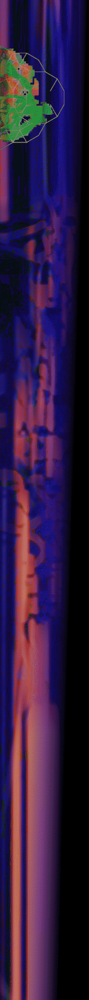
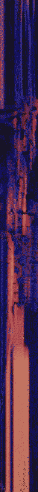

徐程一般以本名进行大部分的声音艺术与实验音乐表演，但也有诸多特别项目以组合或其他代号进行，这里是不完整的大部分主要项目。
Xu Cheng typically performs under his real name for most of his work, such as sound art and experimental music, but he has also undertaken numerous special projects under the names of various groups or pseudonyms. Here is a partial list of his major projects.